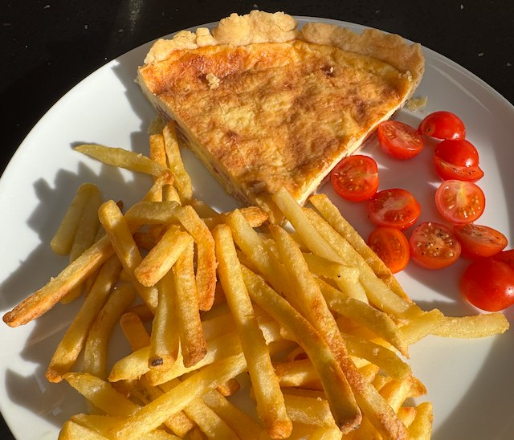

Bacon and Cheese Flan

Ingredients
- Pastry
- 100g plain flour
- 50g butter
- ½ tsp table salt
- water to mix
- Filling
- 220g pack streaky bacon, grill until crisp
- 75g gruyere cheese, grated
- 2 eggs, plus a yolk
- 250ml double cream
- pepper and a little salt
Method
Pastry. Sift the flour into a bowl and add salt. Cut in pieces of butter. Rub in the butter with your finger tips, until you get a crumb. Work into a dough, adding one table spoon of water at a time, until it's slightly sticky. Chill in a bag in the fridge for 20min.
Butter a 25cm flan tin. Rollout the pastry on a floured surface, and gently lift into the dish. Line with parchment paper and add baking beans. Bake in oven on 160°C fan for 20min. Lift out the paper and baking beans.
Grill the bacon and cut into pieces. Grate the cheese.
Filling. Mix eggs with a little salt, pepper, double cream and whisk. Be careful with the salt, since the bacon and cheese are already salty.
When the pastry is ready. Add the bacon, then the filling, then scatter on the cheese. Mush down the cheese below the surface. Cook in oven on 160°C for 30-40min.